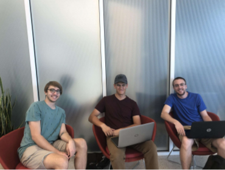

Bargain Books
Bargain Books was the result of a school project my team and I created through various phases of user experience design, from researching, generating concepts with the help of storyboarding and personas to interaction design. The real-world issue we chose for the foundation of our project was the prices of textbooks college/university students had to pay per semester.
Our Challenge
Each semester, college students purchase textbooks for their classes that could cost hundreds of dollars, yet only use the books for a short period of time. At the end of the semester, those books are not needed by its owner anymore. We wanted to find an alternative mean of cutting down the cost of textbooks for students.
Our Process
Research
After conducting some secondary research on how students find and use textbooks, we came up with questions to survey our potential focus group that consisted of juniors and seniors at Indiana University.
Insight
After conducting our research, we sat down to talk about what our users were looking for. Our findings led us to conclude that students do not know what to do with their textbooks after the semester is over because selling them back to the bookstore or book trunks would not be very beneficial. We also found out that more people use the internet to order books instead of going inside of a bookstore. To help us develop a design for our user group, we created a persona that will allow us to refer back to this person when we hit an obstacle during our journey. We asked ourselves some questions such as "Would Jessica like this idea we are proposing?"
Concept
After conducting our interviews, each member gave out a few ideas on how to approach the issue. We found out that people do not know what to do with their old textbooks so we started to brainstorm some concepts. To see how users will interact with our concept, we created a storyboard trying to see how our potential users would sell unneeded materials to other students.
Iterate
To see how usable our prototype was, we created some tasks for our users to complete. Our task asked the user to do the following:
- Get to selling book page
- Upload [BOOK NAME] textbook
- View selling history
- Get to buying book page
- Find enlarged image of textbook
- Find [KATEY’S] selling information
- Find search page
- Sort books by class
- Purchase [BOOK NAME] textbook
Prototype
To have a product that we can test, we constructed a paper prototype based on how we think users will interact with our design. In this prototype, we created a design based on what we think our users would need such as finding and selling textbooks. If you would like the Adobe XD file that we have created, click on the link to the FILE (651 KB).
Reflection
At the end of our project, we discussed what we would do if we had more time on our assignment. The first thing we would do is conduct more usability testing on our solution. We did not get to see how our users would interact with Bargain Books. Testing is the most important aspect to design because if the product is not usable, people would not use it. Another thing we would do is try to make a high fidelity version on our design as well. Drawing it out with pencil is okay because it shows our users what our design looks like, but with a high fidelity version, we would be able to see what they like to see visually. We would go out and learn how to do so because if we make a high fidelity prototype look bad, people may be biased during the usability testing, but when they see that we drew it ourselves, they understand that some people cannot draw as well as others. Testing is something we wanted to do more of.